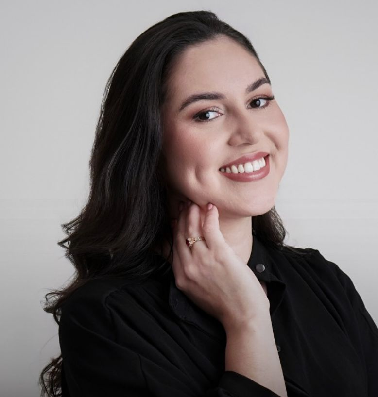

Mentes que Transformam
Corpo Clínico Multidisciplinar

Jaqueline Freire
Fundadora | Pedagoga, Psicopedagoga e Neuropsicopedagoga
Uma das fundadoras da Evoluir Mentes. Pedagoga, Psicopedagoga e Neuropsicopedagoga (SBNPP nº 18991), especializada em Intervenção ABA para Autismo e Deficiência Intelectual e pós-graduanda em Desenvolvimento Infantil pelo CBI. Atua na avaliação de TEA, TDAH e Transtornos Específicos de Aprendizagem, com foco no desenvolvimento e nas dificuldades de aprendizagem de crianças e adolescentes.
Loreci Tasca
Fundadora | Psicóloga e Neuropsicóloga
Loreci Tasca, psicóloga e neuropsicóloga, uma das fundadoras da Clínica Evoluir Mentes. Especialista em Neuropsicologia e pós-graduada em Neurociência do Comportamento. Atua com crianças, adolescentes e adultos, realizando acompanhamento psicológico e avaliação neuropsicológica com base técnica e olhar individualizado.

Suelle Alves
Fundadora | Fonoaudióloga
Suelle Alves. Fonoaudióloga e uma das fundadoras da Clínica Evoluir Mentes. Realiza atendimentos de forma acolhedora e individualizada, sempre respeitando o ritmo e as necessidades de cada criança. Atua com Teste da Linguinha, realizando avaliação e diagnóstico das alterações do frênulo lingual (anquiloglossia). Trabalha com intervenção em Transtorno Fonológico, auxiliando crianças que apresentam trocas ou omissões de sons na fala, além de acompanhamento terapêutico para Gagueira (Disfemia).
Também atua nos casos de Atraso de Linguagem, estimulando o desenvolvimento da comunicação e da linguagem oral, e realiza avaliação e terapia em Transtorno do Processamento Auditivo (TPA), auxiliando crianças que apresentam dificuldade em compreender, interpretar ou reter informações auditivas.
Jamyle Quinto
Pedagoga e Psicopedagoga
Jamyle Quinto, uma das fundadoras da Clínica Evoluir Mentes. Pedagoga, Psicopedagoga, pós-graduada em Análise do Comportamento Aplicada, atualmente pós-graduanda em Neuropsicologia.
Atua na avaliação e intervenção das dificuldades de aprendizagem, com experiência clínica e educacional no atendimento de crianças e adolescentes, incluindo casos de TEA, TDAH, dislexia e outras demandas do neurodesenvolvimento.
Vanessa Costa
Fisioterapeuta Infantil & Psicomotricista
Especialista em Neurodesenvolvimento, Autismo e Psicomotricidade. Sou fisioterapeuta infantil e dedicada ao cuidado de crianças com Transtorno do Espectro Autista (TEA) e alterações neurológicas. Atua com foco no desenvolvimento global da criança, respeitando sua individualidade, seu tempo e suas potencialidades. Meu trabalho une ciência, sensibilidade e estratégias lúdicas para promover evolução motora, cognitiva e funcional.
- ✔️ Intervenção precoce no TEA
- ✔️ Reabilitação neurológica infantil
- ✔️ Estimulação do desenvolvimento motor
- ✔️ Psicomotricidade
- ✔️ Coordenação motora e equilíbrio
- ✔️ Integração sensorial
- ✔️ Orientação familiar
Acredito que cada criança é única e que, com estímulos adequados e um olhar humanizado, é possível transformar desafios em conquistas diárias. Meu compromisso é proporcionar autonomia, funcionalidade e qualidade de vida, sempre trabalhando em parceria com a família e equipe multidisciplinar. 💙 Desenvolver com amor, ciência e propósito.
Ivan Rodrigues
Psicólogo, Analista do Comportamento e Treinador
Sobre Ivan Rodrigues
Sou psicólogo, analista do comportamento e treinador especializado em saúde emocional masculina, tomada de decisão e liderança sob pressão. Atuo com homens que carregam responsabilidades — na família, nos negócios e na vida profissional — e que precisam desenvolver equilíbrio emocional, clareza e posicionamento sem perder força, identidade ou direção.
Minha prática integra Psicologia, Análise do Comportamento, TCC e estratégias estruturadas de desenvolvimento humano, com foco em regulação emocional, responsabilidade pessoal e construção de maturidade funcional. Além do atendimento individual, atuo no contexto corporativo com saúde mental estratégica, desenvolvimento de lideranças e intervenções voltadas à performance sustentável e à prevenção de riscos emocionais.
"Meu trabalho não é sobre fragilidade. É sobre estrutura emocional. É sobre decisão."